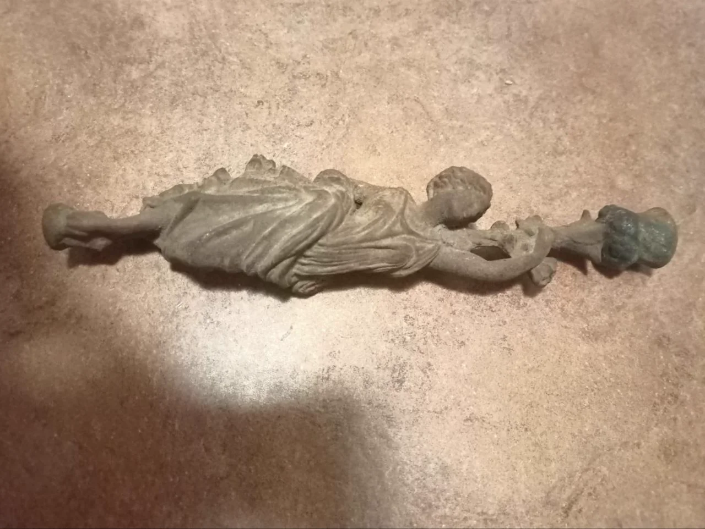
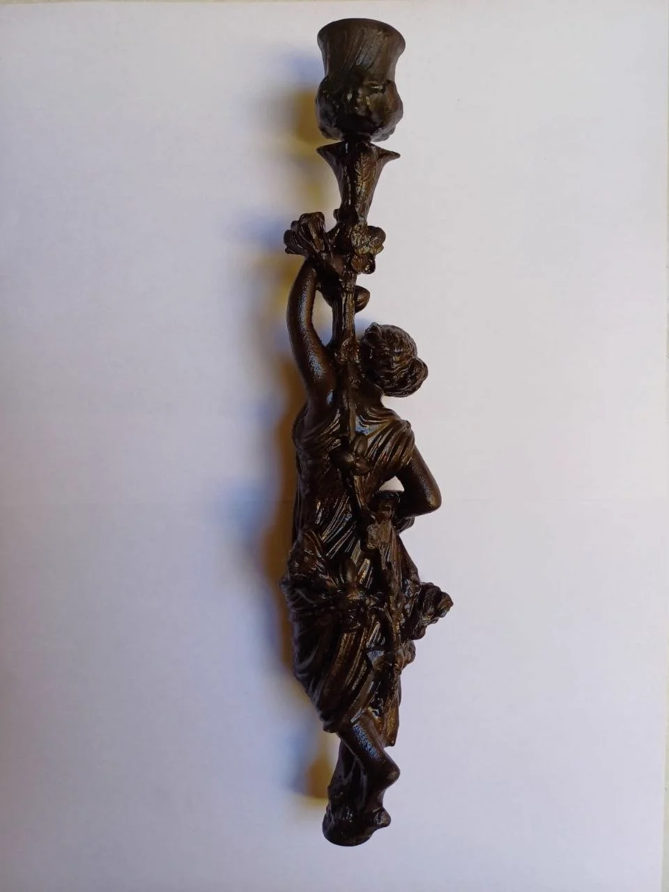
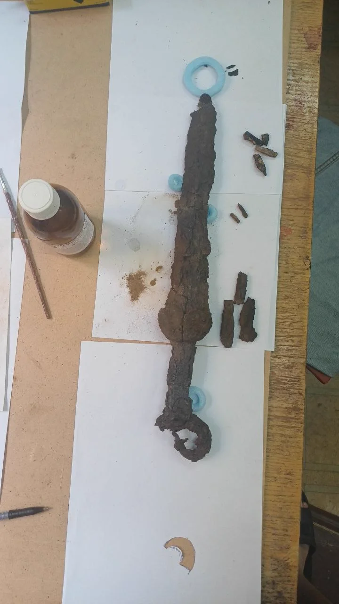
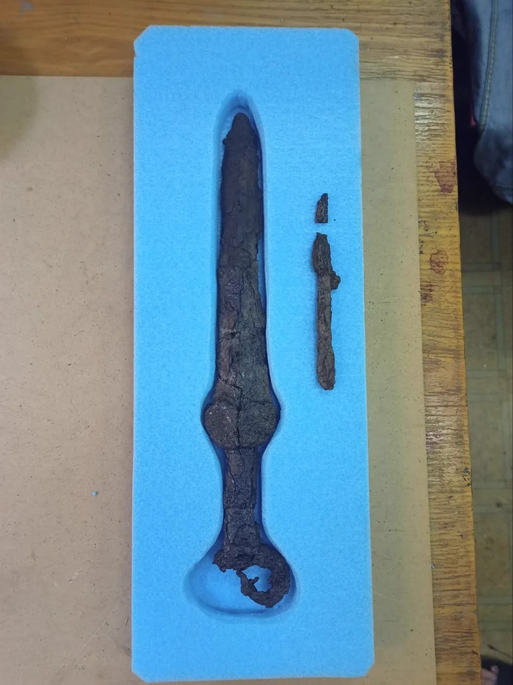

// Роботи_та_Артефакти
Фотографії артефактів з музейних фондів та наукових досліджень. Натисніть на фото для перегляду.
Процес реставрації статуетки підсвідчника бронзової 18-19 століття.

Процес реставрації статуетки підсвідчника бронзової 18-19 століття.

Реставрація статуетки підсвідчника бронзової 18-19 століття.

Акінак меч скіфський до реставрації.

До реставрації Акінак з антеноподібним навершям та метелекоподібним перехрестям.

Після реставрації Акінак з антеноподібним навершям та метелекоподібним перехрестям